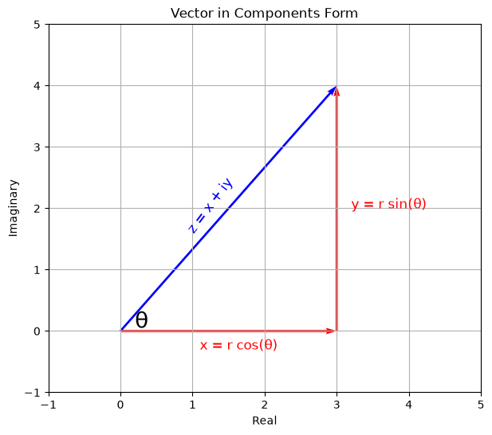
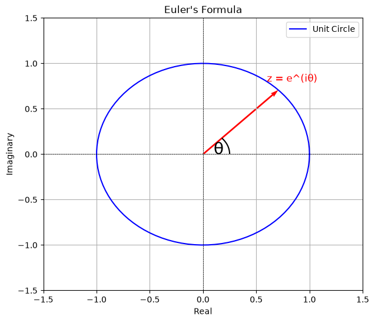

Complex Conjugates
With points in the Cartesian plane, through transformations, we can reflect a point across the x or y axis. For instance, the point $(x, y)$ can be reflected across the x-axis to get the point $(x, -y)$. Across the y-axis and we have the point $(-x, y)$. What about complex numbers? Complex numbers can also be reflected across the real and imaginary axes, but the focus is on the real axis. Given a complex number $z = a + bi$, its reflection across the real axis is the complex number $a - bi$ (the sign of the imaginary part is negated). This newly obtained complex number is called the complex conjugate of $z$, denoted by $\overline{z}$.
Some properties of complex conjugates are as follows:
- The complex conjugate of a complex number $z = a + bi$ is given by $\overline{z} = a - bi$.
- The complex conjugate of the complex conjugate of a complex number is the complex number itself, i.e. $\overline{\overline{z}} = z$.
- The complex conjugate of the sum of two complex numbers is equal to the sum of their complex conjugates, i.e. $\overline{z_1 + z_2} = \overline{z_1} + \overline{z_2}$.
- The complex conjugate of the product of two complex numbers is equal to the product of their complex conjugates, i.e. $\overline{z_1 \cdot z_2} = \overline{z_1} \cdot \overline{z_2}$.
- The complex conjugate of the quotient of two complex numbers is equal to the quotient of their complex conjugates, i.e. $\overline{\left(\dfrac{z_1}{z_2}\right)} = \dfrac{\overline{z_1}}{\overline{z_2}}$, provided $z_2 \neq 0$.
- The modulus of a complex number is equal to the modulus of its complex conjugate, i.e. $|z| = |\overline{z}|$.
- The product of a complex number and its complex conjugate is equal to the square of its modulus, i.e. $z \cdot \overline{z} = |z|^2$.
Exponential Form of Complex Numbers
Say we have a point $(x, y)$ which corresponds to the complex number $z = x + yi$. This point can be represented in polar coordinates as $(r, \theta)$, where $r$ is the distance from the origin to the point and $\theta$ is the angle between the positive x-axis and the line connecting the origin to the point.

import matplotlib.pyplot as plt
plt.figure(figsize=(7, 6))
plt.xlim(-1, 5)
plt.ylim(-1, 5)
plt.quiver(0, 0, 3, 4, angles='xy', scale_units='xy', scale=1, color='blue', width=0.005)
plt.quiver(0, 0, 3, 0, angles='xy', scale_units='xy', scale=1, color='red', width=0.005, linestyle='dashed')
plt.quiver(3, 0, 0, 4, angles='xy', scale_units='xy', scale=1, color='red', width=0.005, linestyle='dashed')
plt.text(0.9, 1.6, 'z = x + iy', fontsize=12, color='blue', rotation=53)
plt.text(1.1, -0.3, 'x = r cos(θ)', fontsize=12, color='red')
plt.text(3.2, 2, 'y = r sin(θ)', fontsize=12, color='red')
plt.text(0.2, 0.05, 'θ', fontsize=20, color='black')
plt.xlabel('Real')
plt.ylabel('Imaginary')
plt.title('Vector in Components Form')
plt.grid(True)
plt.show()With that, $z$ can be written in polar form as $z = r(\cos\theta + i\sin\theta)$. This is the trigonometric form of a complex number. $r$ cannot be negative, since it is a distance, and as a matter of fact, the modulus of $z$. Therefore, $r = |z| = \sqrt{x^2 + y^2}$. The angle $\theta$ is the argument of $z$, denoted by $\arg(z)$, and it satisfies $\cos\theta = x/r$ and $\sin\theta = y/r$. When $x > 0$ this gives $\theta = \arctan(y/x)$; in the other quadrants we add or subtract $\pi$ so that $\theta$ lands in the right quadrant (and when $x = 0$, $\theta = \pm\pi/2$). The argument of $z = 0$ is undefined. $\theta$ is measured in radians and is positive in the counter-clockwise direction (from the positive x-axis). Adding any multiple of $2\pi$ gives the same direction, so the angle $\theta$ is coterminal with $\theta + 2n\pi$, where $n$ is an integer. This means the angle obtained can satisfy the equation in steps of $2\pi$. The principal argument, however, which is the unique value of $\theta$ in the interval $(-\pi, \pi]$, is denoted by $\text{Arg}(z)$. Hence, $\arg(z) = \text{Arg}(z) + 2n\pi$.
To express oscillatory situations, complex numbers can be expressed in exponential form as $z = re^{i\theta}$. This rests on Euler's formula:
$$e^{i\theta} = \cos\theta + i\sin\theta$$

import numpy as np
import matplotlib.pyplot as plt
from matplotlib.patches import Arc
theta = np.linspace(0, 2 * np.pi, 100)
plt.figure(figsize=(7, 6))
plt.xlim(-1.5, 1.5)
plt.ylim(-1.5, 1.5)
plt.plot(np.cos(theta), np.sin(theta), label='Unit Circle', color='blue')
plt.quiver(0, 0, np.cos(np.pi/4), np.sin(np.pi/4), angles='xy', scale_units='xy', scale=1, color='red', width=0.005)
plt.text(0.6, 0.8, 'z = e^(iθ)', fontsize=12, color='red')
arc = Arc((0, 0), 0.5, 0.5, angle=0, theta1=0, theta2=45, color='black', linewidth=1.5)
plt.gca().add_patch(arc)
plt.text(0.1, 0, 'θ', fontsize=20, color='black')
plt.xlabel('Real')
plt.ylabel('Imaginary')
plt.title("Euler's Formula")
plt.axhline(0, color='black',linewidth=0.5, ls='--')
plt.axvline(0, color='black',linewidth=0.5, ls='--')
plt.grid(True)
plt.legend()
plt.show()Products and Powers In Exponential Form
These are given as follows, with $z_1 = r_1 e^{i\theta_1}$ and $z_2 = r_2 e^{i\theta_2}$:
- The product of two complex numbers in exponential form is given by $z_1 \cdot z_2 = r_1 r_2 , e^{i(\theta_1 + \theta_2)}$.
- The power of a complex number in exponential form is given by $z^n = r^n e^{in\theta}$, where $z = re^{i\theta}$ and $n$ is an integer.
- The quotient of two complex numbers in exponential form is given by $\dfrac{z_1}{z_2} = \dfrac{r_1}{r_2} , e^{i(\theta_1 - \theta_2)}$, provided $z_2 \neq 0$.
- The inverse of a complex number in exponential form is given by $\dfrac{1}{z} = \dfrac{1}{r} , e^{-i\theta}$, where $z = re^{i\theta}$, provided $z \neq 0$.
Arguments of Products and Quotients
The arguments of products and quotients of complex numbers in exponential form are given as follows, with $z_1 = r_1 e^{i\theta_1}$ and $z_2 = r_2 e^{i\theta_2}$. Since $\arg$ is only defined up to multiples of $2\pi$, these hold up to an added $2n\pi$:
- The argument of the product of two complex numbers is given by $\arg(z_1 \cdot z_2) = \arg(z_1) + \arg(z_2)$.
- The argument of the quotient of two complex numbers is given by $\arg\left(\dfrac{z_1}{z_2}\right) = \arg(z_1) - \arg(z_2)$, provided $z_2 \neq 0$.